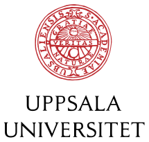

Helping students learn by doing
I teach machine learning and computer systems, and supervise thesis projects on federated learning and IoT security, turning research questions into hands-on student work.
2Courses taught
5Theses supervised
2022Teaching since
Courses

Teacher
Jan–Mar 2025 · Jan–Mar 2026
Information Technology and Energy Storage
Lectures, tutorials and assignments on the foundations of machine learning and data-driven methods for battery management systems.
Machine LearningBattery ManagementData-driven Modelling
Course materials ↗
Supervised Theses
Master's thesis
✓ Completed 2026
Machine Learning for Cybersecurity in Internet of Things Networks
YSYichang Sun
Bachelor's thesis
✓ Completed 2026
Benchmarking Federated Learning Algorithms for Intrusion Detection in RPL-IoT Networks
RFRobin Forslund
Bachelor's thesis
✓ Completed 2026
An Investigation into Intrusion Detection System Generalisation Against Novel Attacks
MDMax Dahlgren
Bachelor's thesis
✓ Completed 2025
Intrusion Detection System Generalisation in IoT Blackhole Attacks
ONOskar Nylin
Bachelor's thesis
✓ Completed 2025
Assessing the Generalizability and Scalability of an IoT Intrusion Detection System against DIS-Flooding Attack Variants
HMHans-Eskil Ytterfelt Martinsson
Teacher Training
Academic Teacher Training Course
Unit for Academic Teaching and Learning, Uppsala University · Autumn 2025
Curriculum DesignConstructive AlignmentFormative & Summative Assessment
Inclusive TeachingResearch-based TeachingDigital Learning
Course project
“Responsible Integration of LLMs in Higher Education”